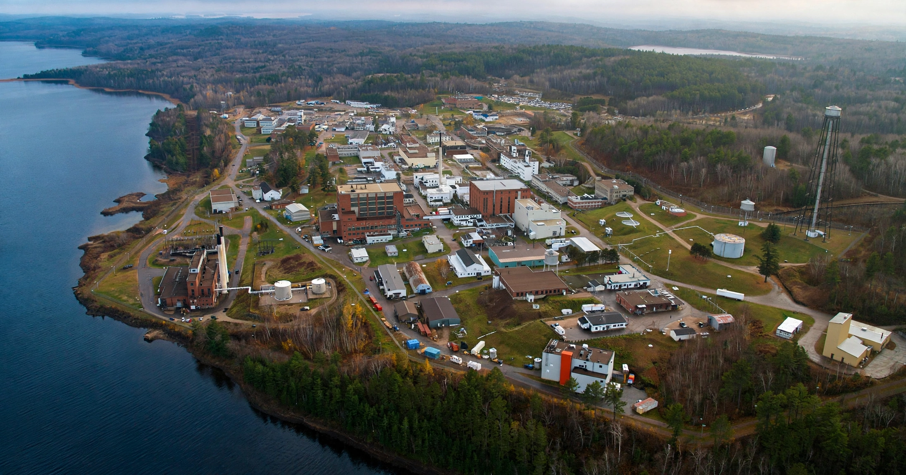

Chalk River Laboratories is a Canadian nuclear research facility near Chalk River, Ontario, about 180 km northwest of Ottawa on the Ottawa River. It was Canada's primary nuclear science site and birthplace of the CANDU reactor technology.

| Established | 1944 |
|---|---|
| Location | Deep River, Ontario, Canada |
| Operator | Canadian Nuclear Laboratories |
Founded in 1944 as a wartime collaboration, the site hosted ZEEP (1945, first reactor outside the US to achieve criticality), NRX (1947) and NRU (1957), which produced medical isotopes including molybdenum-99 and cobalt-60 for much of the world. Accidents at NRX in 1952 — involving a young US Navy officer named Jimmy Carter in the cleanup — and NRU in 1958 were early lessons in reactor safety. NRU shut down in 2018, and the site is transitioning to decommissioning and smaller research roles.